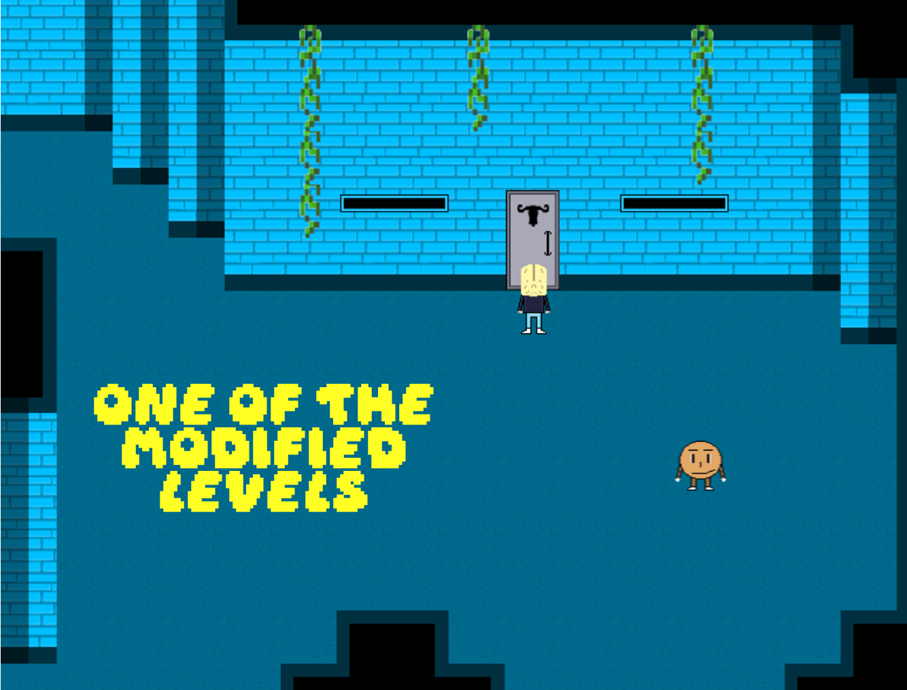
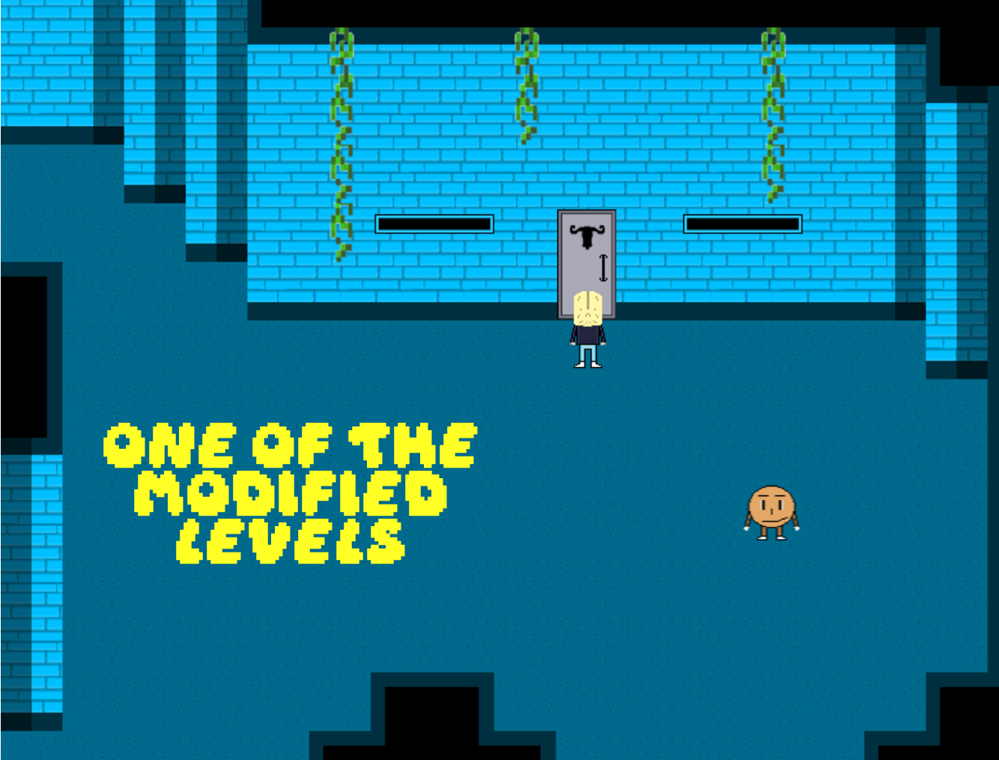

🗓 18 Nisan, 2025
İlk demo sürümünü yayınladıktan sonra, Gamejolt platformunda yeni mekanikler eklediğimiz ikinci bir demo yayınladık. Bu demo, 1. Bölümü içeriyordu. Sonrasında, 2. Bölümün geliştirilmesine hız kesmeden başladık. Geliştirme sürecinde, 2. Bölümde yaptığımız bazı grafiksel iyileştirmelerin çok daha iyi olduğunu fark ettik. Bunun sonucunda, 2. Bölümün geliştirilmesinin sonunda 1. Bölümde de birçok grafiksel iyileştirme yaptık. Ayrıca, ikinci demodaki yumruk atma mekanizmasını birinci demodaki haline getirdik ve artık oyuncuların istedikleri zaman yumruk atabilecekleri bölümler bulunmayacak. Bu mekanizma, yalnızca gerektiğinde kullanılabilecek bir özellik olarak oyunda yer alacak. Bunun dışında, 1. Bölümde değiştirilmesi veya iyileştirilmesi gereken bazı sekansları da geliştirdik.Yenilenmiş 1. Bölüm ve 2. Bölümden görsellere göz atabilirsiniz.
— lyzerfiction
📸 Görselleri görmek için tıklayın.

 
